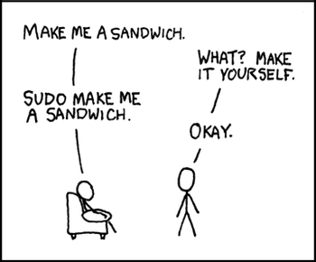

sudo
Dieser Artikel wurde für die folgenden Ubuntu-Versionen getestet:
Dieser Artikel ist größtenteils für alle Ubuntu-Versionen gültig.
Zum Verständnis dieses Artikels sind folgende Seiten hilfreich:
Der Befehl sudo kann Programmaufrufen vorangestellt werden. Er ermöglicht berechtigten Benutzern, das Programm im Namen und mit den Rechten eines anderen Benutzers auszuführen. Beispielsweise um Aufgaben auszuführen, die Administratoren vorbehalten sind:
Programme installieren (
sudo apt-get install ...)Systemkonfigurationen ändern (
sudo nano /etc/fstab)
Sudo fragt vor der Ausführung des Programms unter einem anderem Namen nach dem Passwort des aufrufenden Benutzers. Damit wird überprüft, ob dieser den Befehl selbst eingegeben hat. Der Kreis der berechtigten Benutzer ist in der Datei /etc/sudoers festgelegt. Standardmäßig wird als Ziel-Benutzer root angenommen.
Hinweis:
Erweiterte Rechte mittels der hier beschriebenen Verfahren bitte nur verwenden, wenn eine Aufgabe dies wirklich erfordert, die Programmausführung also zum Beispiel mit Root-Rechten erfolgen muss. Änderungen an Systemdateien sollte man mit Bedacht vornehmen und vorher eine Sicherungskopie anlegen. Eine falsche Verwendung von sudo kann das System unbrauchbar machen.
Unter Ubuntu wird in der /etc/sudoers standardmäßig allen Mitgliedern der Gruppe [2] sudo erlaubt, zum Benutzer root zu werden und damit Rootrechte zu erhalten. Der oder die bei der Installation angelegten Benutzer gehört standardmäßig der Gruppe sudo an. Näheres zur Konfigurationsdatei /etc/sudoers unter sudo/Konfiguration.
In Desktopumgebungen wie GNOME oder KDE werden für bestimmte Aufgaben teilweise automatisch Rootrechte für ein bestimmtes Programm angefordert. So wird man z.B. für eine Programminstallation automatisch nach seinem Passwort gefragt, damit APT Rootrechte erhält und das Programm installieren kann. Sudo braucht dann vielfach gar nicht mehr manuell aufgerufen zu werden.
|  |
xkcd.com  (CC-BY-NC 2.5) (CC-BY-NC 2.5) |
Installation¶
sudo ist essentieller Bestandteil jeder Ubuntu-Installation und sollte auf gar keinen Fall entfernt werden. Es ist im Paket
sudo
enthalten. Dagegen fehlt ab Ubuntu 13.10 das Programm gksudo und muss zuerst installiert [1] werden:
gksu (ab Ubuntu 13.10 in universe)
 mit apturl
mit apturl
Paketliste zum Kopieren:
sudo apt-get install gksu
sudo aptitude install gksu
root bei grafischen Programmen¶
Möchte man grafische Programme (z.B. gedit oder Kate) als root ausführen, sind je nach Desktop eigene Befehle vorgesehen:
| normale Verwendung | |||
| Distribution | Befehl | Beispiel | Anmerkung |
| Ubuntu (Unity/GNOME 3) | gksudo BEFEHL | gksudo gedit | Durch Druck von Alt + F2 wird eine Eingabezeile geöffnet, in die der Befehl getippt werden kann. Alternativ kann auch ein grafisches Terminal verwendet werden. |
| Kubuntu (KDE) | kdesudo BEFEHL | kdesudo kate | Durch Druck von Alt + F2 wird KRunner geöffnet, in dessen Eingabezeile der Befehl getippt werden kann. Alternativ kann auch ein grafisches Terminal verwendet werden. |
| Lubuntu (LXDE) | gksudo BEFEHL | gksudo leafpad | Zur Verwendung von Alt + F2 s.o. |
| Ubuntu MATE | gksudo BEFEHL | gksudo pluma | Zur Verwendung von Alt + F2 s.o. |
| Xubuntu (Xfce) | gksudo BEFEHL | gksudo mousepad | Zur Verwendung von Alt + F2 s.o. |
| Alle | sudo -H BEFEHL | sudo -H nano | Diese Form eignet sich insbesondere für Terminalbefehle. In Fällen, in denen keine grafische Oberfläche verfügbar ist, ist sie sogar unumgänglich. |
Zwei Eigenheiten von sudo können zu Problemen führen:
Der Befehl
sudoändert die Umgebungsvariable$HOMEstandardmäßig nicht auf den entsprechenden Pfad zum Ziel-Benutzer (siehe auch Zusammenfassung). Startet man Programme mitsudo, besteht die Gefahr, dass Konfigurationsdateien mit falschen Rechten im Heimatverzeichnis des ursprünglichen Benutzers erstellt werden. Startet dieser das Programm später unter seinem eigenen Benutzer - also ohnesudo- so kann er die Konfiguration nur noch lesend oder eventuell gar nicht mehr öffnen (Reparatur hier). Daher solltesudoimmer mit der Option-Hverwendet werden. Dies gilt auch bei Systembefehlen, die keine Konfigurationsdateien unter$HOMEablegen. Die grafischensudo-Alternativen leiden nicht unter diesem Problem: Dort wird die Umgebungsvariable$HOMEumgestellt.Grafische Programme lassen sich in manchen Desktopumgebungen mit
sudo -Hnicht aus einem Terminal starten. Dies liegt daran, dass die Grafikumleitung nicht vollständig konfiguriert wird (Xauthority). Dasudo -Halso nicht immer funktioniert und auch keine grafische Passwortabfrage erfolgt, sollten grafische Anwendungen (unter anderem Benutzer) grundsätzlich über die grafischen Alternativen (wie gksudo/kdesudo) gestartet werden.
Der Benutzer root¶
Standardmäßig existiert unter Linux immer ein Konto für den Benutzer root mit der User-ID 0. Dies ist ein Systemkonto mit vollem Zugriff auf das gesamte System und damit auch auf alle Dateien und Einstellungen aller Benutzer.
Bei Ubuntu wird dem Benutzer root allerdings kein Passwort zugewiesen. Dadurch kann sich niemand unter dem Namen "root" anmelden.
Das HOME-Verzeichnis von root¶
Jeder reale Benutzer bekommt ein eigenes Homeverzeichnis unter dem Verzeichnis /home mit seinem Benutzernamen. Das Homeverzeichnis von root ist jedoch /root, damit es auch zur Verfügung steht, falls /home in einem separaten Dateisystem liegt und dieses nicht eingebunden ist.
root im Terminal¶
Sind für einen Terminal-Befehl Root-Rechte erforderlich, so reicht es, dem auszuführenden Befehl das Kommando sudo voranzustellen. Nach der Eingabe wird man nach seinem Passwort gefragt. Dieses ist "blind" einzugeben. Es erscheinen keine Sternchen oder ähnliches auf dem Bildschirm, sondern einfach gar nichts (das kann aber geändert werden, siehe Visuelles Feedback). Beispiel:
Benutzer@Desktop:~$ sudo blkid [sudo] password for Benutzer: /dev/sda1: UUID="8688C7BE88C7AACF" LABEL="WinSystem" TYPE="ntfs" /dev/sda5: LABEL="DATEN" UUID="08A8-7B2C" TYPE="vfat" [...]
Nach dem Eingeben des Passworts ist dies für die nächsten 15 Minuten bei erneuter Verwendung von sudo in diesem Terminal nicht mehr notwendig (kann ebenfalls angepasst werden, siehe Administrator auf Zeit). Die erneute Eingabe des Passwortes kann aber auch vorzeitig durch Angabe der Option -k erzwungen werden. Beispiel:
Benutzer@Desktop:~$ sudo mkdir /media/test [sudo] password for Benutzer: #Passwort erforderlich Benutzer@Desktop:~$ sudo mkdir /media/test2 #Passwort nicht mehr erforderlich Benutzer@Desktop:~$ sudo rmdir /media/test2 #Passwort nicht mehr erforderlich Benutzer@Desktop:~$ sudo -k Benutzer@Desktop:~$ sudo rmdir /media/test [sudo] password for Benutzer: #Passwort erforderlich, selbst vor Ablauf der 15 Minuten
Diese Art der Verwendung bietet einige Vorteile: Rootrechte werden nur für die Dauer des jeweiligen Befehls angefordert. Bei mehreren Befehlen kann individuell festgelegt werden, welche davon mit erweiterten Rechten ablaufen.
Rootshell¶
Für größere administrative Aufgaben kann das ständige Voranstellen von sudo auch hinderlich sein. Um länger als root zu arbeiten - sprich mehrere Befehle hintereinander ausführen zu können, ohne immer wieder sudo eingeben zu müssen - kann man in eine Rootshell wechseln. Nach der Eingabe [3] von
sudo -i
werden alle folgenden Befehle mit Rootrechten ausgeführt, bis man diese Rootshell mit
exit
verlässt. Innerhalb dieser Shell muss kein sudo mehr verwendet werden. Die Dauer der Rootshell selbst ist nicht beschränkt. Es liegt in der Verantwortung des Anwenders, diese zu verlassen. Beispiel:
Benutzer@Desktop:~$ sudo -i [sudo] password for Benutzer: root@Desktop:~# mkdir /media/test root@Desktop:~# rmdir /media/test root@Desktop:~# exit Abgemeldet Benutzer@Desktop:~$
Den dauerhaften Wechsel kann man deutlich am veränderten Prompt "root@Desktop:~#" erkennen. Abschließend signalisiert das normale Prompt das Ende der Rootshell.
Editieren von Dateien unter Rootrechten¶
Zum sicheren Editieren von Dateien wird statt sudo nano Datei besser
sudoedit DATEI
verwendet. Der gewünschte Editor kann vorher über die Umgebungsvariable EDITOR festgelegt werden. Wird dadurch ein grafischer Editor festgelegt, ist zusätzlich der Home-Ordner des Zielnutzers zu setzen (siehe):
sudoedit -H DATEI
Programme im Kontext anderer Benutzer ausführen¶
Programme können auch unter dem Namen eines anderen 'regulären' Benutzers gestartet werden.
Terminalprogramme und Shellkommandos¶
Im Terminal kann ein Benutzerwechsel z.B. nützlich sein, um ein Skript in einer anderen Umgebung zu testen.
Terminal - Ausführung durch Benutzer mit Erlaubnis in /etc/sudoers¶
sudo fragt immer nach dem Passwort des aufrufenden Benutzers. Ein Benutzerwechsel wird aber nur gestattet, wenn dies in /etc/sudoers erlaubt wurde. Dies ist standardmäßig nur für die Gruppe sudo ohne Einschränkungen der Fall. Die Option -H bewirkt, dass dann auch die Umgebungsvariabele $HOME auf das Home-Verzeichnis von BENUTZERNAME mitumzieht, was für grafische Programme wichtig ist.
sudo -H -u BENUTZERNAME PROGRAMM
Terminal - Ausführung mit Passwort des Zielbenutzers¶
Wenn das Passwort des Zielbenutzers bekannt ist, aber man z.B. nicht zur Gruppe sudo gehört, kann der Befehl su genutzt werden.
su BENUTZERNAME -c PROGRAMM
Für BENUTZERNAME den Anmeldenamen des anderen Benutzers eingeben. Man beachte, dass bei diesem Befehl nach dem Passwort des anderen Benutzers gefragt wird.
Hinweis:
Rechteeinstellungen, die in der Datei /etc/sudoers vorgenommen wurden, haben bei su keine Wirkung.
Grafische Programme¶
Hinweis:
Ein Terminalfenster, das unter einem anderen Namen läuft und in dem auch grafische Programme gestartet werden können, kann von Benutzern aus der Gruppe sudo per
Alt +
F2 und Eingabe von "gksudo 'gksu -u ZIELBENUTZER -w gnome-terminal'" geöffnet werden. Wer nicht in der sudo-Gruppe ist, benötigt das Passwort des Zielbenutzers und muss das vorangestellte gksudo weglassen.
Für grafische Programme kann ein Benutzerwechsel nützlich sein, um z.B. die Konfiguration von Programmen eines anderen Benutzers zu überprüfen oder das eigene EMail-Programm oder den Webbrowser in einer separaten Umgebung laufen zu lassen.
Grafisch – Ausführung durch Benutzer mit Erlaubnis in /etc/sudoers¶
Unter KDE:
kdesudo -u BENUTZERNAME PROGRAMM
Hinweis:
kdesudo fragt in diesem Fall nach dem Passwort des Zielbenutzers, man muss aber das eigene Passwort eingeben.
Unter GNOME gibt es zur Zeit keinen funktionierenden analogen Befehl. Mit gksudo kann man grafische Anwendungen nur als Root starten (auch sudo -H PROGRAMM ist möglich). Ein Start im Kontext anderer Benutzer ist nicht möglich. Siehe: Bugreport. Es muss also gksu -w (siehe Grafische Programme) verwendet werden, um zu regulären Benutzern zu wechseln.
Grafisch - Ausführung mit Passwort des Zielbenutzers¶
Bei diesen Befehlen braucht der ausführende Benutzer nicht der Gruppe sudo anzugehören. Für BENUTZERNAME ist jeweils der Anmeldename des anderen Benutzers einzugeben.
Unter GNOME bzw. Xfce:
gksu -w -u BENUTZERNAME PROGRAMM
Unter KDE:
/usr/lib/kde4/libexec/kdesu-distrib/kdesu -u BENUTZERNAME PROGRAMM
Hinweis:
Bei den Befehlen, die den su-Mechanismus nutzen, haben Rechteeinstellungen, die in der Datei /etc/sudoers vorgenommen wurden, keine Auswirkungen, und es werden immer die Passwörter des Zielbenutzers abgefragt. Dabei ist zu beachten, das gksu nur mit der Option -w tatsächlich su nutzt, da es in Ubuntu standardmäßig sudo verwendet. Das KDE-Programm kdesu (sofern vorhanden) besitzt keine Option, um auf den su-Mechanismus umzuschalten, es muss stattdessen der vollständige Pfad zum Originalbefehl angegeben werden. Wird einfach nur kdesu aufgerufen, so wird das in Ubuntu veränderte /usr/bin/kdesu verwendet, das (wie gksu ohne Option -w) auf sudo zurückgreift.
Sudo in einem Skript verwenden¶
Das Passwort an sudo übergeben¶
Möchte man sudo in einem Skript benutzen und das Passwort über eine grafische Abfrage eingeben lassen, kann dies folgendermaßen geschehen: Der Befehl gksu öffnet die grafische Abfrage für das Passwort, und durch die Option -p wird das Passwort in stdout geschrieben. Die Option -S hinter dem sudo-Befehl liest das Passwort, welches per Pipe an sudo übergeben wird, von stdin wieder ein. Die Option -- beendet das Einlesen von weiteren Argumenten. Dadurch können dem auszuführenden Befehl eigene Optionsschalter mitgegeben werden.
1 2 | #! /bin/bash gksu -p -m "Bitte Passwort eingeben:" | sudo -S -s -- apt-get update |
Alternativen zu gksu bieten beispielsweise die Programme ssh-askpass, Zenity unter Gnome und KDialog unter KDE.
Außerdem kann sudo noch auf andere Weise konfiguriert werden, um ein externes Programm zur Passworteingabe zu benutzen, siehe dazu sudo/Konfiguration.
Zusammenfassung¶
| Programme als anderer Benutzer ausführen | |||||
| Bei | Befehl | Zweck | $HOME zeigt auf Verzeichnis von: | Kann standardmäßig benutzt werden: | |
| Kommandozeilen-Befehl/Programm | sudo | führt einzelne Befehle als root aus | "/eigenes HOME" | von Gruppe sudo | |
sudo -H | führt Befehl mit angepasstem $HOME aus (empfohlen) | /root bzw. "/anderen Benutzer" | von Gruppe sudo | ||
sudo -u BENUTZER | führt Befehl als anderer BENUTZER aus | "/eigenes HOME" | von Gruppe sudo | ||
sudo -s | startet mittels Variable SHELL definierte Shell | "/eigenes HOME" | von Gruppe sudo | ||
sudo -i | startet interaktive shell | /root bzw. "/anderen Benutzer" | von Gruppe sudo | ||
su | wechselt aktuellen Benutzer mit Passwort des Zielbenutzers | /root bzw. "/anderen Benutzer" | bei Kenntnis des Passworts | ||
| grafisches Programm | kdesudo und gksudo | führt Programm als root aus | /root | von Gruppe sudo | |
kdesudo -u | führt Programm als anderer Benutzer aus (z.Zt. nur KDE) | "/anderen Benutzer" | von Gruppe sudo | ||
gksu -w -u | führt Programm mit Passwort und Umgebung des Zielbenutzers aus (Gnome/GTK) | "/anderen Benutzer" | bei Kenntnis des Passworts | ||
/usr/[...]/kdesu -u | führt Programm mit Passwort und Umgebung des Zielbenutzers aus (KDE) | "/anderen Benutzer" | bei Kenntnis des Passworts | ||
Links¶
Intern¶
Benutzer und Gruppen - Wichtige Informationen
Konfiguration von sudo - Weitere Einstellungen zur Benutzung des
sudo-Befehls und damit verbundene RechtePolicyKit - verfeinerte Rechteverwaltung, wird zukünftig mehr und mehr in die Desktopumgebung eingebaut
chown - Eigentümer und Gruppen von Dateien und Verzeichnissen ändern
chmod - Zugriffsrechte von Dateien und Verzeichnissen ändern
- Erstellt mit Inyoka
-
 2004 – 2017 ubuntuusers.de • Einige Rechte vorbehalten
2004 – 2017 ubuntuusers.de • Einige Rechte vorbehalten
Lizenz • Kontakt • Datenschutz • Impressum • Serverstatus -
Serverhousing gespendet von